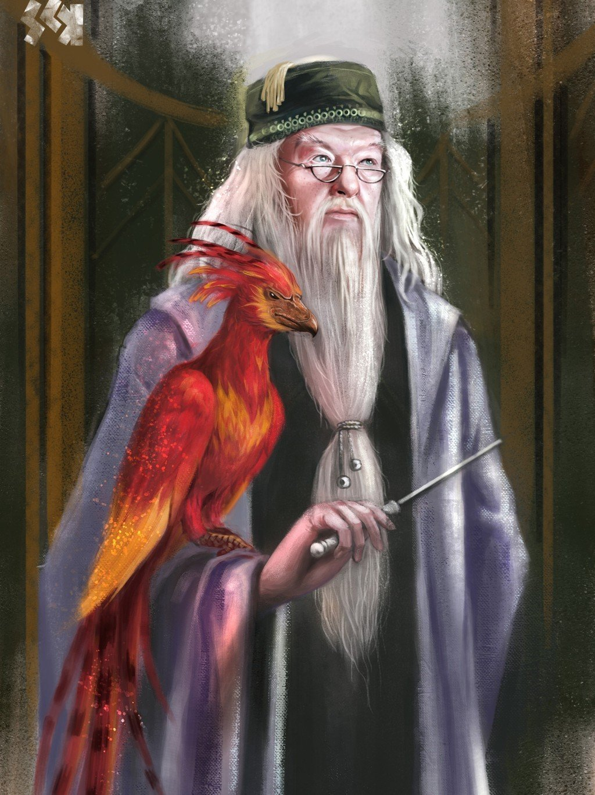
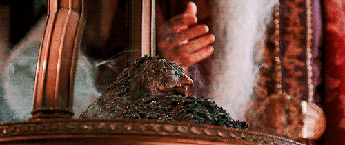
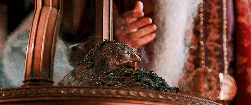
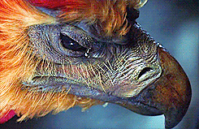

Phoenix Looks and Behavior
-
Looks: The phoenix is a large swan-sized scarlet magical bird with red and gold plumage, along with a golden beak and talons, black eyes, and a tail as long as a peacock's. Its scarlet feathers glow faintly in darkness, while its golden tail feathers are hot to the touch.

-
Behavior: Phoenixes will usually nest on mountain peaks and are gentle herbivores that are not known for fighting. As stated by Dumbledore, they are extremely loyal creatures, and are capable of arriving to the aid of beings who share a similar devotion. This was how Fawkes arrived to assist Harry in slaying the Basilisk in the Chamber of Secrets during his second year at Hogwarts. Phoenixes are very difficult to domesticate, as Newton Scamander says in his book Fantastic Beasts and Where to Find Them: "The phoenix gains an not because it is aggressive, but because very few wizards have ever succeeded in domesticating it."

Phoenix Abilities
-
Burning Days: As phoenixes approach their Burning Day they resemble a half-plucked turkey. Their eyes become dull, their feathers start to fall out, and it begins to make gagging noises. Then the bird suddenly bursts into flames only to rise from the ashes shortly after. In a number of days, they grow back to full size. Thanks to this ability, phoenixes live to an immense age, perhaps even forever. This event is called Burning Day, and gives these birds a great life span, as well as the ability to take the full force of a Killing Curse and still be reborn. Phoenixes are immune to the gaze of a basilisk, which would normally kill anyone who has direct eye to eye contact with it, or petrify anyone through indirect eye contact, such as seeing a glimpse of the massive serpent or its reflection.
 
 -
Phoenix Tears/Song: Their tears have potent healing capabilities. For instance, phoenix tears are the only known antidote to Basilisk venom. Their tears are also able to bring a person back even from the brink of death. As seen in "Harry Potter and the Chamber Secrets" when Harry is dying from getting Basilisk venom While the phoenix song will increase the courage of those who are good and strike fear into the hearts of those who serve evil. Phoenix song also has a deep emotional impact, magical in nature and able to provide support and comfort.
 -
Heavy loads: Phoenixes are capable of lifting a great weight with their tails, such as being able to effortlessly fly up a distance with four people holding on to its tail.